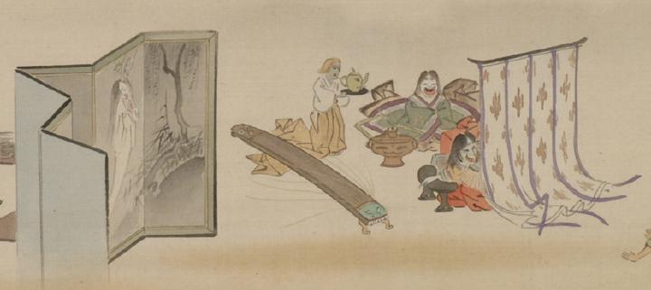

鉄漿付けの最中に几帳の向こうを覗き見する女の化物たち。周りには耳盥など器物の化物がおり、画面左には女の幽霊が描かれた屏風が立てられている。
著作者：靖々光一（山本光一）／出典：親書誌：U426_nichibunken_0098：滑稽百鬼夜行絵巻；コッケイヒャッキヤギョウエマキ／日付：2008／資源識別子：U426_nichibunken_0098_0002_0000
Copyright (c)2010- International Research Center for Japanese Studies, Kyoto, Japan. All rights reserved.